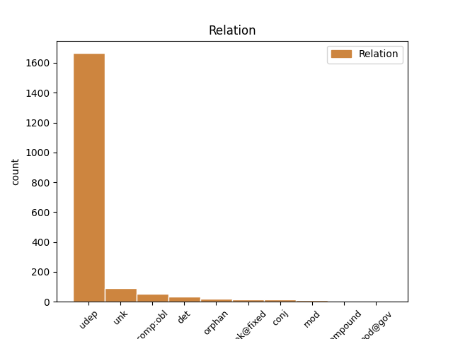
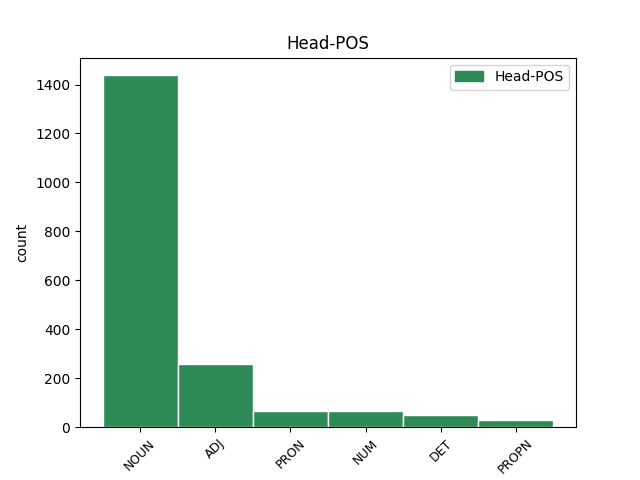
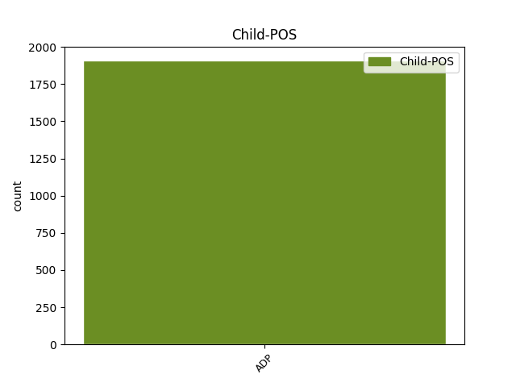

Distribution of features within this leaf



Agreement Rules sorted by frequency.
- When the dependent token is the underspecified dependency(udep) of the head token, and the head token is NOUN and the dependent token is ADP.
1 Polomrtvý _ _ _ _ 0 _ _ _
2 , _ _ _ _ 0 _ _ _
3 s _ _ _ _ 0 _ _ _
4 hlavou hlava NOUN NNFS7-----A---- Case=Ins|Gender=Fem|Number=Sing|Polarity=Pos 0 _ _ _
5 pod pod ADP RR--7---------- AdpType=Prep|Case=Ins 4 udep _ _
6 vodou _ _ _ _ 0 _ _ _
7 proplouval _ _ _ _ 0 _ _ _
8 kolem _ _ _ _ 0 _ _ _
9 vesnice _ _ _ _ 0 _ _ _
10 , _ _ _ _ 0 _ _ _
11 když _ _ _ _ 0 _ _ _
12 ho _ _ _ _ 0 _ _ _
13 zpozorovaly _ _ _ _ 0 _ _ _
14 děti _ _ _ _ 0 _ _ _
15 . _ _ _ _ 0 _ _ _
1 " _ _ _ _ 0 _ _ _
2 To _ _ _ _ 0 _ _ _
3 jsme _ _ _ _ 0 _ _ _
4 zase _ _ _ _ 0 _ _ _
5 hráli _ _ _ _ 0 _ _ _
6 , _ _ _ _ 0 _ _ _
7 že _ _ _ _ 0 _ _ _
8 jo _ _ _ _ 0 _ _ _
9 ! _ _ _ _ 0 _ _ _
10 " _ _ _ _ 0 _ _ _
11 nadhodil _ _ _ _ 0 _ _ _
12 stařík _ _ _ _ 0 _ _ _
13 s _ _ _ _ 0 _ _ _
14 ulomenou _ _ _ _ 0 _ _ _
15 nožičkou _ _ _ _ 0 _ _ _
16 brýlí _ _ _ _ 0 _ _ _
17 , _ _ _ _ 0 _ _ _
18 přelepenou přelepený ADJ AAFS7----1A---- Case=Ins|Degree=Pos|Gender=Fem|Number=Sing|Polarity=Pos 0 _ _ _
19 za za ADP RR--7---------- AdpType=Prep|Case=Ins 18 udep _ _
20 uchem _ _ _ _ 0 _ _ _
21 černou _ _ _ _ 0 _ _ _
22 izolační _ _ _ _ 0 _ _ _
23 páskou _ _ _ _ 0 _ _ _
24 . _ _ _ _ 0 _ _ _
1 " _ _ _ _ 0 _ _ _
2 Rovná _ _ _ _ 0 _ _ _
3 práva právo NOUN NNNP4-----A---- Case=Acc|Gender=Neut|Number=Plur|Polarity=Pos 0 _ _ _
4 pro pro ADP RR--4---------- AdpType=Prep|Case=Acc 3 det _ _
5 všechny _ _ _ _ 0 _ _ _
6 ! _ _ _ _ 0 _ _ _
7 " _ _ _ _ 0 _ _ _
8 křičeli _ _ _ _ 0 _ _ _
9 . _ _ _ _ 0 _ _ _
1 Když _ _ _ _ 0 _ _ _
2 mluvila _ _ _ _ 0 _ _ _
3 o _ _ _ _ 0 _ _ _
4 Švédce Švédka PROPN NNFS6-----A---- Case=Loc|Gender=Fem|NameType=Nat|Number=Sing|Polarity=Pos 0 _ _ _
5 na na ADP RR--6---------- AdpType=Prep|Case=Loc 4 udep _ _
6 vídeňském _ _ _ _ 0 _ _ _
7 striptýzu _ _ _ _ 0 _ _ _
8 , _ _ _ _ 0 _ _ _
9 hladila _ _ _ _ 0 _ _ _
10 si _ _ _ _ 0 _ _ _
11 svá _ _ _ _ 0 _ _ _
12 ňadra _ _ _ _ 0 _ _ _
13 a _ _ _ _ 0 _ _ _
14 prohlásila _ _ _ _ 0 _ _ _
15 , _ _ _ _ 0 _ _ _
16 že _ _ _ _ 0 _ _ _
17 jsou _ _ _ _ 0 _ _ _
18 hezčí _ _ _ _ 0 _ _ _
19 než _ _ _ _ 0 _ _ _
20 Švédčina _ _ _ _ 0 _ _ _
21 . _ _ _ _ 0 _ _ _
1 A _ _ _ _ 0 _ _ _
2 tak _ _ _ _ 0 _ _ _
3 nebylo _ _ _ _ 0 _ _ _
4 divu _ _ _ _ 0 _ _ _
5 , _ _ _ _ 0 _ _ _
6 že _ _ _ _ 0 _ _ _
7 se _ _ _ _ 0 _ _ _
8 zamiloval _ _ _ _ 0 _ _ _
9 do _ _ _ _ 0 _ _ _
10 chytré _ _ _ _ 0 _ _ _
11 a _ _ _ _ 0 _ _ _
12 půvabné _ _ _ _ 0 _ _ _
13 mladší _ _ _ _ 0 _ _ _
14 sestry _ _ _ _ 0 _ _ _
15 jednoho jeden NUM ClMS2---------- Animacy=Anim|Case=Gen|Gender=Masc|Number=Sing|NumForm=Word|NumType=Card|NumValue=1,2,3 0 _ _ _
16 ze z ADP RV--2---------- AdpType=Voc|Case=Gen 15 udep _ _
17 svých _ _ _ _ 0 _ _ _
18 přátel _ _ _ _ 0 _ _ _
19 a _ _ _ _ 0 _ _ _
20 vzali _ _ _ _ 0 _ _ _
21 se _ _ _ _ 0 _ _ _
22 . _ _ _ _ 0 _ _ _
1 Jaké _ _ _ _ 0 _ _ _
2 by _ _ _ _ 0 _ _ _
3 to _ _ _ _ 0 _ _ _
4 asi _ _ _ _ 0 _ _ _
5 bylo _ _ _ _ 0 _ _ _
6 , _ _ _ _ 0 _ _ _
7 zapomenout _ _ _ _ 0 _ _ _
8 na _ _ _ _ 0 _ _ _
9 reklamní _ _ _ _ 0 _ _ _
10 slogany _ _ _ _ 0 _ _ _
11 , _ _ _ _ 0 _ _ _
12 které _ _ _ _ 0 _ _ _
13 nám _ _ _ _ 0 _ _ _
14 stále _ _ _ _ 0 _ _ _
15 nabízejí _ _ _ _ 0 _ _ _
16 kosmetické _ _ _ _ 0 _ _ _
17 krášlicí _ _ _ _ 0 _ _ _
18 prostředky _ _ _ _ 0 _ _ _
19 , _ _ _ _ 0 _ _ _
20 důvěřovat _ _ _ _ 0 _ _ _
21 této _ _ _ _ 0 _ _ _
22 staré _ _ _ _ 0 _ _ _
23 moudrosti _ _ _ _ 0 _ _ _
24 a _ _ _ _ 0 _ _ _
25 udělat _ _ _ _ 0 _ _ _
26 něco něco PRON PZ--4---------- Case=Acc|PronType=Ind 0 _ _ _
27 pro pro ADP RR--4---------- AdpType=Prep|Case=Acc 26 udep _ _
28 svou _ _ _ _ 0 _ _ _
29 vnitřní _ _ _ _ 0 _ _ _
30 krásu _ _ _ _ 0 _ _ _
31 ? _ _ _ _ 0 _ _ _
1 A _ _ _ _ 0 _ _ _
2 nejen _ _ _ _ 0 _ _ _
3 u _ _ _ _ 0 _ _ _
4 jedné _ _ _ _ 0 _ _ _
5 kostky _ _ _ _ 0 _ _ _
6 , _ _ _ _ 0 _ _ _
7 ale _ _ _ _ 0 _ _ _
8 u _ _ _ _ 0 _ _ _
9 všech všechen DET PLFP2---------- Case=Gen|Gender=Fem|Number=Plur|PronType=Tot 0 _ _ _
10 z z ADP RR--2---------- AdpType=Prep|Case=Gen 9 udep _ _
11 poslední _ _ _ _ 0 _ _ _
12 dodávky _ _ _ _ 0 _ _ _
13 . _ _ _ _ 0 _ _ _
1 Bylo _ _ _ _ 0 _ _ _
2 mi _ _ _ _ 0 _ _ _
3 stejně _ _ _ _ 0 _ _ _
4 špatně _ _ _ _ 0 _ _ _
5 , _ _ _ _ 0 _ _ _
6 jako _ _ _ _ 0 _ _ _
7 když _ _ _ _ 0 _ _ _
8 jsem _ _ _ _ 0 _ _ _
9 čekala _ _ _ _ 0 _ _ _
10 první _ _ _ _ 0 _ _ _
11 dítě _ _ _ _ 0 _ _ _
12 , _ _ _ _ 0 _ _ _
13 pouze _ _ _ _ 0 _ _ _
14 s _ _ _ _ 0 _ _ _
15 tím _ _ _ _ 0 _ _ _
16 rozdílem _ _ _ _ 0 _ _ _
17 , _ _ _ _ 0 _ _ _
18 že _ _ _ _ 0 _ _ _
19 při _ _ _ _ 0 _ _ _
20 těhotenství _ _ _ _ 0 _ _ _
21 s _ _ _ _ 0 _ _ _
22 Valentýnou _ _ _ _ 0 _ _ _
23 jsem _ _ _ _ 0 _ _ _
24 měla _ _ _ _ 0 _ _ _
25 chuť chuť NOUN NNFS4-----A---- Case=Acc|Gender=Fem|Number=Sing|Polarity=Pos 0 _ _ _
26 na na ADP RR--4---------- AdpType=Prep|Case=Acc 25 mod _ _
27 sladké _ _ _ _ 0 _ _ _
28 . _ _ _ _ 0 _ _ _
1 " _ _ _ _ 0 _ _ _
2 Tehdy _ _ _ _ 0 _ _ _
3 jsem _ _ _ _ 0 _ _ _
4 nastoupil _ _ _ _ 0 _ _ _
5 do _ _ _ _ 0 _ _ _
6 jedné _ _ _ _ 0 _ _ _
7 malé _ _ _ _ 0 _ _ _
8 , _ _ _ _ 0 _ _ _
9 ale _ _ _ _ 0 _ _ _
10 znamenité _ _ _ _ 0 _ _ _
11 tiskárny _ _ _ _ 0 _ _ _
12 , _ _ _ _ 0 _ _ _
13 " _ _ _ _ 0 _ _ _
14 vyprávěl _ _ _ _ 0 _ _ _
15 starý _ _ _ _ 0 _ _ _
16 tiskař _ _ _ _ 0 _ _ _
17 M _ _ _ _ 0 _ _ _
18 . _ _ _ _ 0 _ _ _
19 T _ _ _ _ 0 _ _ _
20 . _ _ _ _ 0 _ _ _
21 , _ _ _ _ 0 _ _ _
22 " _ _ _ _ 0 _ _ _
23 taková _ _ _ _ 0 _ _ _
24 prestižní _ _ _ _ 0 _ _ _
25 tiskárnička _ _ _ _ 0 _ _ _
26 to _ _ _ _ 0 _ _ _
27 byla _ _ _ _ 0 _ _ _
28 , _ _ _ _ 0 _ _ _
29 nedělala _ _ _ _ 0 _ _ _
30 moc _ _ _ _ 0 _ _ _
31 zakázek _ _ _ _ 0 _ _ _
32 , _ _ _ _ 0 _ _ _
33 jenže _ _ _ _ 0 _ _ _
34 co _ _ _ _ 0 _ _ _
35 dělala _ _ _ _ 0 _ _ _
36 , _ _ _ _ 0 _ _ _
37 to _ _ _ _ 0 _ _ _
38 bylo _ _ _ _ 0 _ _ _
39 , _ _ _ _ 0 _ _ _
40 jako _ _ _ _ 0 _ _ _
41 by _ _ _ _ 0 _ _ _
42 to _ _ _ _ 0 _ _ _
43 políbili _ _ _ _ 0 _ _ _
44 andělé _ _ _ _ 0 _ _ _
45 , _ _ _ _ 0 _ _ _
46 jak _ _ _ _ 0 _ _ _
47 se _ _ _ _ 0 _ _ _
48 dal _ _ _ _ 0 _ _ _
49 slyšet _ _ _ _ 0 _ _ _
50 jeden _ _ _ _ 0 _ _ _
51 náš _ _ _ _ 0 _ _ _
52 zákazník _ _ _ _ 0 _ _ _
53 : _ _ _ _ 0 _ _ _
54 líbezné _ _ _ _ 0 _ _ _
55 umělecké _ _ _ _ 0 _ _ _
56 tisky _ _ _ _ 0 _ _ _
57 , _ _ _ _ 0 _ _ _
58 reprodukce _ _ _ _ 0 _ _ _
59 stoprocentně _ _ _ _ 0 _ _ _
60 odpovídající _ _ _ _ 0 _ _ _
61 originálu _ _ _ _ 0 _ _ _
62 , _ _ _ _ 0 _ _ _
63 litografie _ _ _ _ 0 _ _ _
64 a _ _ _ _ 0 _ _ _
65 podobné _ _ _ _ 0 _ _ _
66 lahůdky _ _ _ _ 0 _ _ _
67 , _ _ _ _ 0 _ _ _
68 které _ _ _ _ 0 _ _ _
69 mě _ _ _ _ 0 _ _ _
70 , _ _ _ _ 0 _ _ _
71 zvyklého zvyklý ADJ AAMS4----1A---- Animacy=Anim|Case=Acc|Degree=Pos|Gender=Masc|Number=Sing|Polarity=Pos 0 _ _ _
72 na na ADP RR--4---------- AdpType=Prep|Case=Acc 71 comp:obl _ _
73 velkou _ _ _ _ 0 _ _ _
74 novinovou _ _ _ _ 0 _ _ _
75 tiskárnu _ _ _ _ 0 _ _ _
76 , _ _ _ _ 0 _ _ _
77 okouzlovaly _ _ _ _ 0 _ _ _
78 . _ _ _ _ 0 _ _ _
1 Na _ _ _ _ 0 _ _ _
2 půdě _ _ _ _ 0 _ _ _
3 se _ _ _ _ 0 _ _ _
4 tak _ _ _ _ 0 _ _ _
5 objevila _ _ _ _ 0 _ _ _
6 skutečná _ _ _ _ 0 _ _ _
7 galérie _ _ _ _ 0 _ _ _
8 vzácných _ _ _ _ 0 _ _ _
9 rytin rytina NOUN NNFP2-----A---- Case=Gen|Gender=Fem|Number=Plur|Polarity=Pos 0 _ _ _
10 , _ _ _ _ 0 _ _ _
11 dopisů _ _ _ _ 0 _ _ _
12 a _ _ _ _ 0 _ _ _
13 kreseb _ _ _ _ 0 _ _ _
14 , _ _ _ _ 0 _ _ _
15 obrázků _ _ _ _ 0 _ _ _
16 a _ _ _ _ 0 _ _ _
17 črt _ _ _ _ 0 _ _ _
18 , _ _ _ _ 0 _ _ _
19 studií _ _ _ _ 0 _ _ _
20 , _ _ _ _ 0 _ _ _
21 leptů _ _ _ _ 0 _ _ _
22 a _ _ _ _ 0 _ _ _
23 suchých _ _ _ _ 0 _ _ _
24 jehel _ _ _ _ 0 _ _ _
25 , _ _ _ _ 0 _ _ _
26 všelijakých _ _ _ _ 0 _ _ _
27 drobností _ _ _ _ 0 _ _ _
28 a _ _ _ _ 0 _ _ _
29 miniatur _ _ _ _ 0 _ _ _
30 - _ _ _ _ 0 _ _ _
31 snad _ _ _ _ 0 _ _ _
32 z z ADP RR--2---------- AdpType=Prep|Case=Gen 9 unk _ _
33 celého _ _ _ _ 0 _ _ _
34 světa _ _ _ _ 0 _ _ _
35 . _ _ _ _ 0 _ _ _
1 O _ _ _ _ 0 _ _ _
2 tom _ _ _ _ 0 _ _ _
3 kotěti _ _ _ _ 0 _ _ _
4 v _ _ _ _ 0 _ _ _
5 zapomenuté _ _ _ _ 0 _ _ _
6 srbské _ _ _ _ 0 _ _ _
7 samotě _ _ _ _ 0 _ _ _
8 , _ _ _ _ 0 _ _ _
9 o _ _ _ _ 0 _ _ _
10 vás ty PRON PP-P6--2------- Case=Loc|Number=Plur|Person=2|PronType=Prs 0 _ _ _
11 , _ _ _ _ 0 _ _ _
12 vážený _ _ _ _ 0 _ _ _
13 univerzitní _ _ _ _ 0 _ _ _
14 profesore _ _ _ _ 0 _ _ _
15 , _ _ _ _ 0 _ _ _
16 o o ADP RR--6---------- AdpType=Prep|Case=Loc 10 orphan _ _
17 mně _ _ _ _ 0 _ _ _
18 , _ _ _ _ 0 _ _ _
19 světoběžníkovi _ _ _ _ 0 _ _ _
20 . _ _ _ _ 0 _ _ _
1 Namísto _ _ _ _ 0 _ _ _
2 Churchilla _ _ _ _ 0 _ _ _
3 a _ _ _ _ 0 _ _ _
4 Woodrowa _ _ _ _ 0 _ _ _
5 Wilsona _ _ _ _ 0 _ _ _
6 se _ _ _ _ 0 _ _ _
7 dosadil _ _ _ _ 0 _ _ _
8 Lenin _ _ _ _ 0 _ _ _
9 a _ _ _ _ 0 _ _ _
10 Stalin _ _ _ _ 0 _ _ _
11 , _ _ _ _ 0 _ _ _
12 namísto _ _ _ _ 0 _ _ _
13 Ibsena Ibsen PROPN NNMS2-----A---- Animacy=Anim|Case=Gen|Gender=Masc|NameType=Sur|Number=Sing|Polarity=Pos 0 _ _ _
14 a _ _ _ _ 0 _ _ _
15 Whitmana _ _ _ _ 0 _ _ _
16 Gorkij _ _ _ _ 0 _ _ _
17 a _ _ _ _ 0 _ _ _
18 Stalin _ _ _ _ 0 _ _ _
19 , _ _ _ _ 0 _ _ _
20 a _ _ _ _ 0 _ _ _
21 namísto namísto ADP RR--2---------- AdpType=Prep|Case=Gen 13 orphan _ _
22 pánaboha _ _ _ _ 0 _ _ _
23 marx _ _ _ _ 0 _ _ _
24 - _ _ _ _ 0 _ _ _
25 leninismus _ _ _ _ 0 _ _ _
26 a _ _ _ _ 0 _ _ _
27 Stalin _ _ _ _ 0 _ _ _
28 . _ _ _ _ 0 _ _ _
1 Vešla _ _ _ _ 0 _ _ _
2 se _ _ _ _ 0 _ _ _
3 na _ _ _ _ 0 _ _ _
4 pouhé _ _ _ _ 0 _ _ _
5 dvě _ _ _ _ 0 _ _ _
6 stránky _ _ _ _ 0 _ _ _
7 obyčejného _ _ _ _ 0 _ _ _
8 dopisu _ _ _ _ 0 _ _ _
9 a _ _ _ _ 0 _ _ _
10 neměla _ _ _ _ 0 _ _ _
11 právně _ _ _ _ 0 _ _ _
12 o o ADP RR--4---------- AdpType=Prep|Case=Acc 14 mod _ _
13 moc _ _ _ _ 0 _ _ _
14 větší velký ADJ AAFS4----2A---- Case=Acc|Degree=Cmp|Gender=Fem|Number=Sing|Polarity=Pos 0 _ _ _
15 váhu _ _ _ _ 0 _ _ _
16 , _ _ _ _ 0 _ _ _
17 než _ _ _ _ 0 _ _ _
18 když _ _ _ _ 0 _ _ _
19 bychom _ _ _ _ 0 _ _ _
20 si _ _ _ _ 0 _ _ _
21 jednoduše _ _ _ _ 0 _ _ _
22 plácli _ _ _ _ 0 _ _ _
23 . _ _ _ _ 0 _ _ _
1 Asi _ _ _ _ 0 _ _ _
2 za _ _ _ _ 0 _ _ _
3 deset _ _ _ _ 0 _ _ _
4 minut _ _ _ _ 0 _ _ _
5 se _ _ _ _ 0 _ _ _
6 profesor _ _ _ _ 0 _ _ _
7 Hofhans _ _ _ _ 0 _ _ _
8 opět _ _ _ _ 0 _ _ _
9 vynořil _ _ _ _ 0 _ _ _
10 , _ _ _ _ 0 _ _ _
11 oblečen _ _ _ _ 0 _ _ _
12 do _ _ _ _ 0 _ _ _
13 kožených _ _ _ _ 0 _ _ _
14 kalhot _ _ _ _ 0 _ _ _
15 a _ _ _ _ 0 _ _ _
16 kožené _ _ _ _ 0 _ _ _
17 bundy _ _ _ _ 0 _ _ _
18 , _ _ _ _ 0 _ _ _
19 na _ _ _ _ 0 _ _ _
20 hlavě hlava NOUN NNFS6-----A---- Case=Loc|Gender=Fem|Number=Sing|Polarity=Pos 0 _ _ _
21 kuklu _ _ _ _ 0 _ _ _
22 a _ _ _ _ 0 _ _ _
23 motocyklistické _ _ _ _ 0 _ _ _
24 brýle _ _ _ _ 0 _ _ _
25 , _ _ _ _ 0 _ _ _
26 na na ADP RR--6---------- AdpType=Prep|Case=Loc 20 orphan _ _
27 rukou _ _ _ _ 0 _ _ _
28 rukavice _ _ _ _ 0 _ _ _
29 až _ _ _ _ 0 _ _ _
30 po _ _ _ _ 0 _ _ _
31 loket _ _ _ _ 0 _ _ _
32 . _ _ _ _ 0 _ _ _
1 Ten ten DET PDIS4---------- Animacy=Inan|Case=Acc|Gender=Masc|Number=Sing|PronType=Dem 0 _ _ _
2 na na ADP RR--4---------- AdpType=Prep|Case=Acc 1 mod _ _
3 zítra _ _ _ _ 0 _ _ _
4 jsem _ _ _ _ 0 _ _ _
5 udělala _ _ _ _ 0 _ _ _
6 v _ _ _ _ 0 _ _ _
7 ruce _ _ _ _ 0 _ _ _
8 , _ _ _ _ 0 _ _ _
9 ale _ _ _ _ 0 _ _ _
10 měla _ _ _ _ 0 _ _ _
11 bych _ _ _ _ 0 _ _ _
12 také _ _ _ _ 0 _ _ _
13 tady _ _ _ _ 0 _ _ _
14 na _ _ _ _ 0 _ _ _
15 tom _ _ _ _ 0 _ _ _
16 krámu _ _ _ _ 0 _ _ _
17 . _ _ _ _ 0 _ _ _
18 " _ _ _ _ 0 _ _ _
1 " _ _ _ _ 0 _ _ _
2 Jednoduše _ _ _ _ 0 _ _ _
3 udělejte _ _ _ _ 0 _ _ _
4 tři _ _ _ _ 0 _ _ _
5 hromady _ _ _ _ 0 _ _ _
6 : _ _ _ _ 0 _ _ _
7 na _ _ _ _ 0 _ _ _
8 první _ _ _ _ 0 _ _ _
9 hromadu _ _ _ _ 0 _ _ _
10 dejte _ _ _ _ 0 _ _ _
11 malé _ _ _ _ 0 _ _ _
12 brambory _ _ _ _ 0 _ _ _
13 , _ _ _ _ 0 _ _ _
14 na _ _ _ _ 0 _ _ _
15 druhou druhý ADJ CrFS4---------- Case=Acc|Gender=Fem|Number=Sing|NumType=Ord 0 _ _ _
16 střední _ _ _ _ 0 _ _ _
17 a _ _ _ _ 0 _ _ _
18 na na ADP RR--4---------- AdpType=Prep|Case=Acc 15 orphan _ _
19 třetí _ _ _ _ 0 _ _ _
20 velké _ _ _ _ 0 _ _ _
21 ! _ _ _ _ 0 _ _ _
22 " _ _ _ _ 0 _ _ _
1 Naplnil _ _ _ _ 0 _ _ _
2 dva _ _ _ _ 0 _ _ _
3 měchy _ _ _ _ 0 _ _ _
4 , _ _ _ _ 0 _ _ _
5 jeden jeden NUM ClIS4---------- Animacy=Inan|Case=Acc|Gender=Masc|Number=Sing|NumForm=Word|NumType=Card|NumValue=1,2,3 0 _ _ _
6 pro pro ADP RR--4---------- AdpType=Prep|Case=Acc 5 conj _ _
7 sebe _ _ _ _ 0 _ _ _
8 na _ _ _ _ 0 _ _ _
9 cestu _ _ _ _ 0 _ _ _
10 a _ _ _ _ 0 _ _ _
11 druhý _ _ _ _ 0 _ _ _
12 pro _ _ _ _ 0 _ _ _
13 vládce _ _ _ _ 0 _ _ _
14 , _ _ _ _ 0 _ _ _
15 a _ _ _ _ 0 _ _ _
16 vyrazil _ _ _ _ 0 _ _ _
17 na _ _ _ _ 0 _ _ _
18 cestu _ _ _ _ 0 _ _ _
19 . _ _ _ _ 0 _ _ _
1 Naplnil _ _ _ _ 0 _ _ _
2 dva _ _ _ _ 0 _ _ _
3 měchy _ _ _ _ 0 _ _ _
4 , _ _ _ _ 0 _ _ _
5 jeden _ _ _ _ 0 _ _ _
6 pro _ _ _ _ 0 _ _ _
7 sebe _ _ _ _ 0 _ _ _
8 na _ _ _ _ 0 _ _ _
9 cestu _ _ _ _ 0 _ _ _
10 a _ _ _ _ 0 _ _ _
11 druhý druhý ADJ CrIS4---------- Animacy=Inan|Case=Acc|Gender=Masc|Number=Sing|NumType=Ord 0 _ _ _
12 pro pro ADP RR--4---------- AdpType=Prep|Case=Acc 11 conj _ _
13 vládce _ _ _ _ 0 _ _ _
14 , _ _ _ _ 0 _ _ _
15 a _ _ _ _ 0 _ _ _
16 vyrazil _ _ _ _ 0 _ _ _
17 na _ _ _ _ 0 _ _ _
18 cestu _ _ _ _ 0 _ _ _
19 . _ _ _ _ 0 _ _ _
Disagree Examples:
1 Tenhle _ _ _ _ 0 _ _ _
2 náramek _ _ _ _ 0 _ _ _
3 měl _ _ _ _ 0 _ _ _
4 cenu _ _ _ _ 0 _ _ _
5 luxusního _ _ _ _ 0 _ _ _
6 auta _ _ _ _ 0 _ _ _
7 , _ _ _ _ 0 _ _ _
8 jenže _ _ _ _ 0 _ _ _
9 jeho _ _ _ _ 0 _ _ _
10 krása _ _ _ _ 0 _ _ _
11 byla _ _ _ _ 0 _ _ _
12 ještě _ _ _ _ 0 _ _ _
13 větší _ _ _ _ 0 _ _ _
14 , _ _ _ _ 0 _ _ _
15 byl _ _ _ _ 0 _ _ _
16 to _ _ _ _ 0 _ _ _
17 jeden jeden NUM ClIS1---------- Animacy=Inan|Case=Nom|Gender=Masc|Number=Sing|NumForm=Word|NumType=Card|NumValue=1,2,3 0 _ _ _
18 z z ADP RR--2---------- AdpType=Prep|Case=Gen 17 udep _ _
19 těch _ _ _ _ 0 _ _ _
20 předmětů _ _ _ _ 0 _ _ _
21 , _ _ _ _ 0 _ _ _
22 na _ _ _ _ 0 _ _ _
23 které _ _ _ _ 0 _ _ _
24 člověk _ _ _ _ 0 _ _ _
25 pohlédne _ _ _ _ 0 _ _ _
26 a _ _ _ _ 0 _ _ _
27 vzdává _ _ _ _ 0 _ _ _
28 chválu _ _ _ _ 0 _ _ _
29 Stvořiteli _ _ _ _ 0 _ _ _
30 , _ _ _ _ 0 _ _ _
31 který _ _ _ _ 0 _ _ _
32 dal _ _ _ _ 0 _ _ _
33 lidem _ _ _ _ 0 _ _ _
34 takové _ _ _ _ 0 _ _ _
35 nadání _ _ _ _ 0 _ _ _
36 . _ _ _ _ 0 _ _ _
1 Co _ _ _ _ 0 _ _ _
2 by _ _ _ _ 0 _ _ _
3 se _ _ _ _ 0 _ _ _
4 asi _ _ _ _ 0 _ _ _
5 se _ _ _ _ 0 _ _ _
6 světem _ _ _ _ 0 _ _ _
7 stalo _ _ _ _ 0 _ _ _
8 , _ _ _ _ 0 _ _ _
9 když _ _ _ _ 0 _ _ _
10 by _ _ _ _ 0 _ _ _
11 rodiče _ _ _ _ 0 _ _ _
12 mluvili _ _ _ _ 0 _ _ _
13 s _ _ _ _ 0 _ _ _
14 dětmi _ _ _ _ 0 _ _ _
15 stejně _ _ _ _ 0 _ _ _
16 jako _ _ _ _ 0 _ _ _
17 prateta prateta NOUN NNFS1-----A---- Case=Nom|Gender=Fem|Number=Sing|Polarity=Pos 0 _ _ _
18 s s ADP RR--7---------- AdpType=Prep|Case=Ins 17 unk _ _
19 květinou _ _ _ _ 0 _ _ _
20 , _ _ _ _ 0 _ _ _
21 když _ _ _ _ 0 _ _ _
22 by _ _ _ _ 0 _ _ _
23 blízký _ _ _ _ 0 _ _ _
24 pro _ _ _ _ 0 _ _ _
25 blízkého _ _ _ _ 0 _ _ _
26 měl _ _ _ _ 0 _ _ _
27 vždy _ _ _ _ 0 _ _ _
28 aspoň _ _ _ _ 0 _ _ _
29 díl _ _ _ _ 0 _ _ _
30 pratetiny _ _ _ _ 0 _ _ _
31 laskavé _ _ _ _ 0 _ _ _
32 pozornosti _ _ _ _ 0 _ _ _
33 . _ _ _ _ 0 _ _ _
1 Slova _ _ _ _ 0 _ _ _
2 lásky _ _ _ _ 0 _ _ _
3 jsou _ _ _ _ 0 _ _ _
4 neviditelnou _ _ _ _ 0 _ _ _
5 a _ _ _ _ 0 _ _ _
6 přesto _ _ _ _ 0 _ _ _
7 zázračnou _ _ _ _ 0 _ _ _
8 zálivkou zálivka NOUN NNFS7-----A---- Case=Ins|Gender=Fem|Number=Sing|Polarity=Pos 0 _ _ _
9 - _ _ _ _ 0 _ _ _
10 pro pro ADP RR--4---------- AdpType=Prep|Case=Acc 8 udep _ _
11 duše _ _ _ _ 0 _ _ _
12 květin _ _ _ _ 0 _ _ _
13 i _ _ _ _ 0 _ _ _
14 pro _ _ _ _ 0 _ _ _
15 duše _ _ _ _ 0 _ _ _
16 lidí _ _ _ _ 0 _ _ _
17 . _ _ _ _ 0 _ _ _
1 Začal _ _ _ _ 0 _ _ _
2 jsem _ _ _ _ 0 _ _ _
3 vztekle _ _ _ _ 0 _ _ _
4 kopat _ _ _ _ 0 _ _ _
5 do _ _ _ _ 0 _ _ _
6 kufru _ _ _ _ 0 _ _ _
7 a _ _ _ _ 0 _ _ _
8 do _ _ _ _ 0 _ _ _
9 koše koš NOUN NNIS2-----A---- Animacy=Inan|Case=Gen|Gender=Masc|Number=Sing|Polarity=Pos 0 _ _ _
10 na na ADP RR--4---------- AdpType=Prep|Case=Acc 9 udep _ _
11 odpadky _ _ _ _ 0 _ _ _
12 . _ _ _ _ 0 _ _ _
1 Je _ _ _ _ 0 _ _ _
2 to _ _ _ _ 0 _ _ _
3 ošklivé _ _ _ _ 0 _ _ _
4 , _ _ _ _ 0 _ _ _
5 vím _ _ _ _ 0 _ _ _
6 , _ _ _ _ 0 _ _ _
7 jenomže _ _ _ _ 0 _ _ _
8 já _ _ _ _ 0 _ _ _
9 neberu _ _ _ _ 0 _ _ _
10 naše _ _ _ _ 0 _ _ _
11 dědoušky _ _ _ _ 0 _ _ _
12 a _ _ _ _ 0 _ _ _
13 babičky _ _ _ _ 0 _ _ _
14 jako _ _ _ _ 0 _ _ _
15 čísla _ _ _ _ 0 _ _ _
16 , _ _ _ _ 0 _ _ _
17 beru _ _ _ _ 0 _ _ _
18 každého každý DET PLMS4----1A---- Animacy=Anim|Case=Acc|Degree=Pos|Gender=Masc|Number=Sing|Polarity=Pos|PronType=Tot 0 _ _ _
19 z z ADP RR--2---------- AdpType=Prep|Case=Gen 18 udep _ _
20 nich _ _ _ _ 0 _ _ _
21 jako _ _ _ _ 0 _ _ _
22 tajemství _ _ _ _ 0 _ _ _
23 - _ _ _ _ 0 _ _ _
24 a _ _ _ _ 0 _ _ _
25 tahle _ _ _ _ 0 _ _ _
26 paní _ _ _ _ 0 _ _ _
27 pro _ _ _ _ 0 _ _ _
28 mne _ _ _ _ 0 _ _ _
29 byla _ _ _ _ 0 _ _ _
30 náramně _ _ _ _ 0 _ _ _
31 tajemná _ _ _ _ 0 _ _ _
32 . _ _ _ _ 0 _ _ _